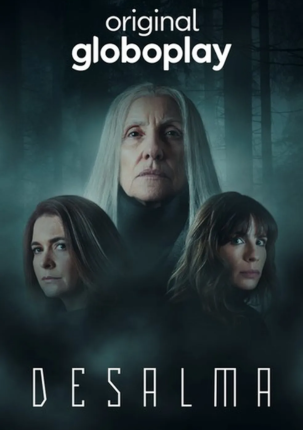
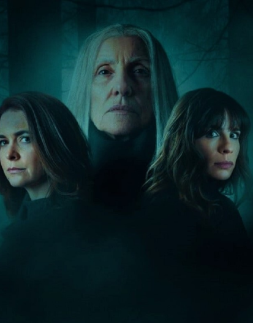

Desalma
Em "Desalma", o desaparecimento da jovem Halyna em 1988 abala a pequena cidade de Brígida, levando à proibição da festa de Ivana Kupala. Trinta anos depois, a comunidade se prepara para reverter essa decisão, mas eventos misteriosos começam a assombrá-los. Três mulheres, Haia, Ignes e Giovana, enfrentam mudanças e traumas profundos. Rituais pagãos prometem reverter até a morte, enquanto a noite mais escura do ano traz à tona espíritos malignos, atraindo os incautos para a mata, onde eventos sobrenaturais relembram a tragédia do passado.
Assista agora!
- Episódio 1 - Às vezes eles voltam 47 Min
- Episódio 2 - Anninka 60 Min
- Episódio 3 - Mamãezinha querida 44 Min
- Episódio 4 - Bruxas 60 Min
- Episódio 5 - Reflexos 60 Min
- Episódio 6 - Forasteiro 60 Min
- Episodio 7 - A sombra dos mortos 43 Min
- Episodio 8 - Pactos 60 Min
- Episodio 9 - O despertar 60 Min
- Episodio 10 - Lua cheia 60 Min
- Episódio 1 - Roman 60 Min
- Episódio 2 - Fôlego 42 Min
- Episódio 3 - Submersos 40 Min
- Episódio 4 - Inocentes 44 Min
- Episódio 5 - Tradições 41 Min
- Episódio 6 - Revelações 44 Min
- Episodio 7 - Halyna 60 Min
- Episodio 8 - Ivana Kupala 60 Min
- Episodio 9 - O retorno 41 Min
- Episodio 10 - Desalma 42 Min

Conheça outras series

Cidade Invisível
2021- hd
- 128 min

O Mecanismo
2018-2019- 4k
- 2 temporadas

Sob Pressão
2021- hd
- Temporada 5

Bom dia, Verônica
2019- hd
- 131 min